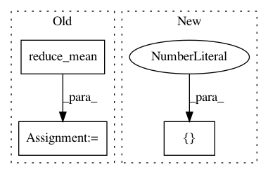

8d9e06745e0c05fd3877bb1d5143309b342c362e,utils/resources/create_inverse_gan_models.py,,build_gan_graph,#Any#Any#Any#,214
Before Change
disc_loss_tf = (disc_loss_real_tf + disc_loss_fake_tf) / 2.0
gen_loss = tf.reduce_mean(
tf.nn.sigmoid_cross_entropy_with_logits(
logits=disc_fake_logits_tf,
labels=tf.ones_like(disc_fake_logits_tf)
)
)
// CREATE OPTIMIZERS
// We only want generator variables to be trained when running the generator and not discriminator variables etc.
trainable_variables = tf.trainable_variables()
After Change
)
disc_loss_fake_tf = tf.losses.sigmoid_cross_entropy(
multi_class_labels=tf.zeros([batch_size, 1, 1, 1]), logits=disc_fake_logits_tf
)
disc_loss_tf = disc_loss_real_tf + disc_loss_fake_tf
In pattern: SUPERPATTERN
Frequency: 3
Non-data size: 3
Instances
Project Name: IBM/adversarial-robustness-toolbox
Commit Name: 8d9e06745e0c05fd3877bb1d5143309b342c362e
Time: 2020-07-05
Author: kz.takemoto@gmail.com
File Name: utils/resources/create_inverse_gan_models.py
Class Name:
Method Name: build_gan_graph
Project Name: deepmind/trfl
Commit Name: 32aa95d63b16b99e9283b3ddd200688c3d6ec165
Time: 2019-08-07
Author: noreply@google.com
File Name: trfl/pixel_control_ops.py
Class Name:
Method Name: pixel_control_rewards
Project Name: NifTK/NiftyNet
Commit Name: a0f77cc8b87512e691a7c22b6fb9ba60f603b632
Time: 2017-07-04
Author: r.gray@ucl.ac.uk
File Name: layer/reparameterization_trick.py
Class Name: ReparameterizationLayer
Method Name: layer_op